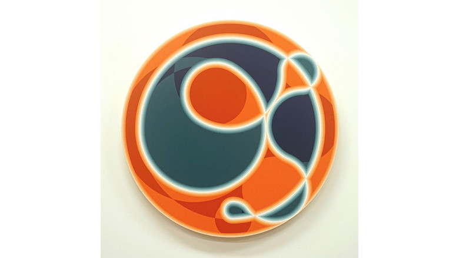

minimal

上浦佑太
http://www.kamiura-yuta.com/biography.html-どんな人
平面・立体問わず抽象作品を多く制作しています。
-解説
一定の規則性、システムに則って作られている作品です。円の大きさを同じ比率で徐々に大きくしながら、45度に回転して配置させて、その間に円をまた置くことで作られています。
-好きなところ
縁がグラデーションになっていて、柔らかな表情が出ていて好きです。一定の規則性、システムに則って作品を作る方法は、自分の意思と離れた予想外の形が生まれて面白いなと思っています。